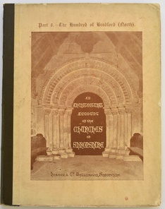

Introduction
An Architectural Account of the Churches of Shropshire
In 1912 the Rev D H S Cranage (1866-1957) published:
"An Architectural Account of the Churches of Shropshire"
In which 311 churches in Shropshire are described.

https://archive.org/details/anarchitectural00webbgoog
(Published by Hobson & Co, Wellington Shropshire (1912))
The Churches of Shropshire & their treasures
In 2004 (and 2013 with colour photos) John Leonard published:
"The Churches of Shropshire & their treasures"
This book identifies 324 churches.
Visits
The latter book has been used to determine the list of churches to be visited.
The following churches have been excluded:
- Whitchurch (St Catherine, Dodington) - now a private dwelling
- Muxton (St John the Evangelist) - built 1997
- Bayston Hill (Christ Church) - now a private dwelling
- Shrewsbury Cathedral
- Shrewsbury (Emmanuel Church) - built 2001
- Shrewsbury (The Holy Spirit, Roseway) - built 1936, now a private club
- Shrewsbury (The Holy Spirit, Meadow Farm Drive) - built 1961
- Shrewsbury (St Peter) - built 1939
- Brookside Pastoral centre - built 1967
- Stirchley (All Saints) - built 1976
- Wattlesborough (St Margaret) - built 1936
- Cold Weston (St Mary) - now a private dwelling
- Cwm Head (St Michael) - the church is closed
- Ludlow Methodist
- Lea Cross (St Anne) - the church is closed
- Sibdon Carwood (St Michael) - the church is closed
- Willey (St John the Baptist) - the church is on private land
- Woodcote Chapel - the church is on private land
Which leaves 306 churches to visit, plus:
- Haughmond Abbey
- Shrewsbury Abbey
- Buildwas Abbey
- Lilleshall Abbey
- Wenlock Priory
- White Ladies Priory
So, there is a total of 312 churches to visit.
Status
As of: 16th May 2026
Number of churches visited: 247